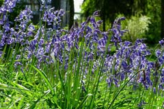

-

Sunflowers in the hamlet Dernekamp, Kirchspiel, Dülmen, North Rhine-Westphalia, Germany By Dietmar Rabich - Own work, CC BY-SA 4.0
-

Poppies in cornfield, Dülmen, North Rhine-Westphalia, Germany By Dietmar Rabich - Own work, CC BY-SA 4.0
-

Daffodils in Sentmaring park, Münster, North Rhine-Westfalia, Germany By Dietmar Rabich - Own work, CC BY-SA 4.0
-

Sentmaring Park, Münster, North Rhine-Westphalia, Germany By Dietmar Rabich - Own work, CC BY-SA 4.0
-

Market in Münster, North Rhine-Westphalia, Germany By Dietmar Rabich - Own work, CC BY-SA 4.0